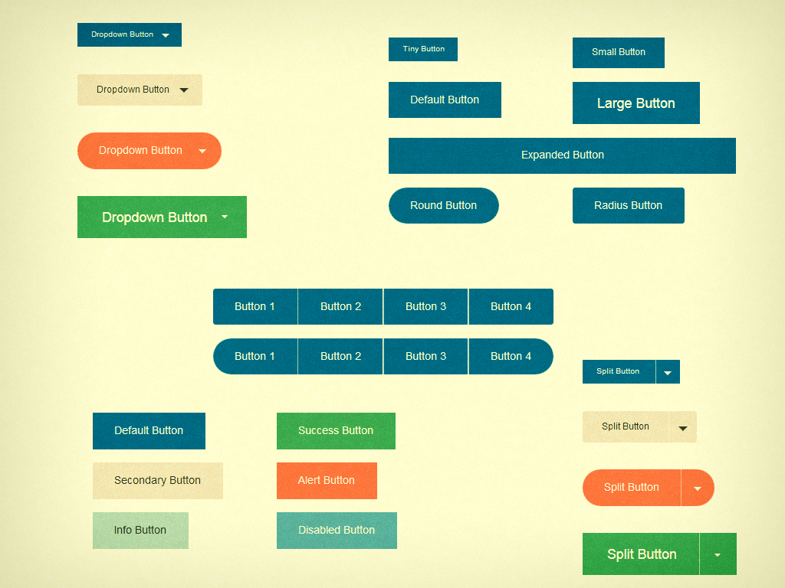
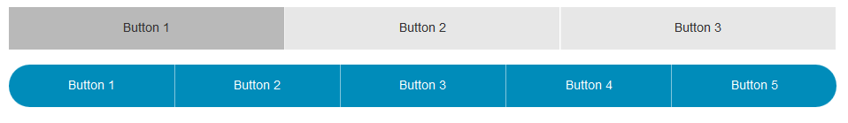
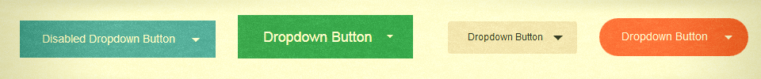
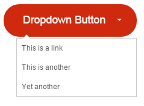
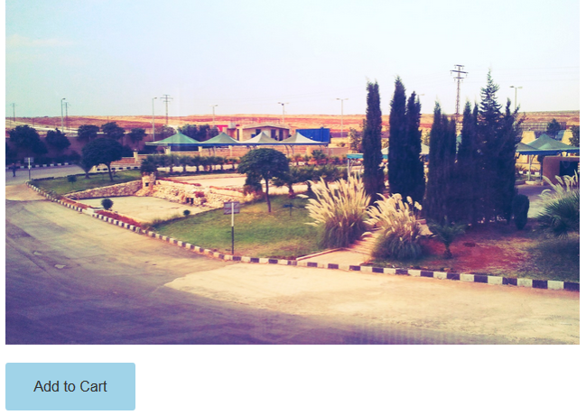
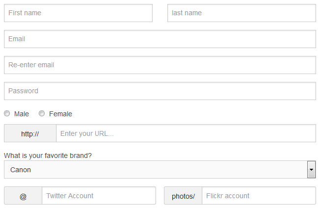

قد وصلت إلى الجزء الرابع، وهذا يعني أنّ السلسلة قد راقت لك -أرجو الله ذلك- في الجزء السابق تعرفنا على نظام التنقل الخاص بالإطار، وفي هذا الجزء سوف نتعرف على الأزرار وأنواعها، والنماذج وملحقاتها، وكيف سوف نستفيد منها في متجرنا.

يَملك Foundation مجموعة من الأزرار الجذابة، لإنشاء زر كل ما عليك فعله هو إضافة الصنف button إلى الوسم <a> أو المُدخل <input> من نوع submit لتحصل على الزر الافتراضي وبالحجم المُتوسط مع اللون الأساسي للإطار ومع تأثير المرور (hover)، ولتخصيص حجم الزر لديك أصناف عدّة:"صغير جدًا" tiny، و"صغير" small، و"كبير" large، و"مُوسّع" expanded. الزر بشكله الافتراضي حاد الحواف، ولتغيير ذلك بإمكانك استخدام أحد الصنفين round أو radius، أمّا لتغيير الألوان فيُقدم Foundation خمسة أصناف باستثناء اللون الأساسي، ويُشير إلى هذه الألوان على أساس دلالتها اللونية، فاللون الأحمر ستجده باسم الصنف alert واللون الأخضر ستجده بالصنف success.
كما يُمَكنك Foundation من إنشاء مجموعة أزرار مُترابطة مع بعضها البعض، وذلك باستخدام "قائمة غير مرتبة" <ul> مع الصنف button-group، ولتنسيق هذا النوع من الأزرار سوف نستخدم الأصناف round وradius لتظهر على أول وآخر زر من المجموعة، أمّا الصنف "مُتساوي" even فهو يُوزع مجموعة الأزرار على عرض المساحة الممنوحة لهذه الأزرار. كما يُقدم Foundation الصنف "اصطفاف" stack والذي يجعل من الأزرار مصفوفةً فوق بعضها البعض، والصنف stack-for-small الذي يَجعل من الأزرار متوافقةً مع الشاشات الصغيرة.
<!-- أبسط شكل من أشكال أزرار ضمن مجموعة وبدون أي تنسيق -->
<ul class="button-group">
<li><a href="#" class="button">Button 1</a></li>
<li><a href="#" class="button">Button 2</a></li>
<li><a href="#" class="button">Button 3</a></li>
</ul>

<ul class="button-group even-3"> <!-- أزرار ضمن مجموعة مع تقسيم المساحة الكلية على ثلاثة أزرار -->
<li><a href="#" class="button secondary">Button 1</a></li>
<li><a href="#" class="button secondary">Button 2</a></li>
<li><a href="#" class="button secondary">Button 3</a></li>
</ul>
<ul class="button-group round even-6"> <!-- أزرار ضمن مجموعة مع تقسيم المساحة الكلية على الأزرار الستّة وتنسيق بحواف دائرية -->
<li><a href="#" class="button">Button 1</a></li>
<li><a href="#" class="button">Button 2</a></li>
<li><a href="#" class="button">Button 3</a></li>
<li><a href="#" class="button">Button 4</a></li>
<li><a href="#" class="button">Button 5</a></li>
<li><a href="#" class="button">Button 6</a></li>
</ul>

مثال حي http://codepen.io/anon/pen/zxZrVa:

في الإصدارات الأخيرة من إطار العمل Foundation تم تبسيط التعامل مع هذا النوع من الأزرار، كل ما تحتاج إليه العنصران <button> و<ul>، الزر سوف يأخذ الصنفين button وdropdown وخاصية المعلومات data-dropdown والتي تحمل قيمة بأيّ اسم معبّر لكي نعرّف به القائمة غير المرتبة، أمّا القائمة غير مرتبة ذاتها فتأخذ المعرّف المُسبق عبر قيمة الخاصية id، وبالإضافة إلى "خاصية المعلومات" data-dropdown-content والصنف f-dropdown، بهذا نحصل على زر مع قائمة مُنسدلة بأبسط شكلٍ ممكن.
<!-- زر مع قائمة مُنسدلة وبحواف دائرية ولون أحمر وكبير الحجم -->
<button data-dropdown="drop" class="large alert round button dropdown">Dropdown Button</button><br>
<ul id="drop" data-dropdown-content class="f-dropdown"> <!-- القائمة المُنسدلة مع عناصرها -->
<li><a href="#">This is a link</a></li>
<li><a href="#">This is another</a></li>
<li><a href="#">Yet another</a></li>
</ul>

مثال حي http://codepen.io/anon/pen/GgWZRJ:
يُنشئ "زر منقسم" عن طريق الربط بين الوسوم الثلاثة<a>و <span> و <ul>، الوسم <a> سوف يأخذ الصنفين button وsplit، أمّا الصنف <span> سوف يأخذ "خاصية المعلومات" data-dropdown مع قيمة مناسبة لتعريف "القائمة غير المرتبة" <ul>، أمّا القائمة <ul> سوف نُضيف لها الخاصية id مع القيمة المُعرفة في خاصية المعلومات data-dropdown في الصنف <span>، وبالإضافة إلى الصنف f-dropdown و"خاصية المعلومات" data-dropdown-content.
لنستخدم بعض هذه الأزرار في متجرنا، في الصفحة الرئيسة لدينا الصور الأكثر مبيعًا سوف نحول زر الشراء العادي إلى زر مُنقسم (split button)، وذلك عبر إضافة الصنفين button وsplit ولنجعله صغير الحجم عبر الصنف tiny، وللقائمة المُنسدلة سوف نقوم بإنشاء "قائمة غير مُرتبة" للخيارات الإضافية، كما في الشيفرة التالية:
<!-- زر مُنقسم صغير جدًا مع قائمة مُنسدلة -->
<a href="#" class="button split tiny">Buy<span data-dropdown="drop"></span></a>
<ul id="drop" class="f-dropdown" data-dropdown-content> <!-- القائمة المُنسدلة وعناصرها -->
<li><a href="#">Add to favorites</a></li>
<li><a href="#">Add to cart</a></li>
</ul>

في صفحة المُنتج سوف نجعل زر "أضف إلى السلة" مصقول الحواف بالصنف radius، مع لون خفيف بالصنف Info.
<a href="#" class="button info radius">Add to Cart</a>

في صفحة التسجيل سوف نقوم بالتعديل على المُدخل input من نوع "إرسال" submit وتنسيقه على أنّه غير مفعل بالصنف disabled وبحواف دائرية بالصنف round.
<input type="submit" value="Submit" class="button round disabled">

يتفوّق Foundation على Bootstrap بتوفير "جداول الأسعار" (pricing tables)، ومع الاتجاه الكبير نحو تطبيقات الويب، وظهور العديد من الشركات الناشئة، تزايد الطلب على هذا النوع من الجداول. Foundation كما في كل الميزات التي يُقدمها، جعل من إنشاء "جدول أسعار" أمرًا يسيرًا، فالإنشاء "جدول أسعار" كل ما عليك فعله هو إضافة الصنف pricing-table إلى "قائمة غير مرتبة" (<ul>)، أمّا "عناصر القائمة" <li> فلديها الأصناف "عنوان" title، "سعر" price، "وصف" description، "عنصر دائري" bullet-item، وأخيرًا "الزر" cta-button.
في صفحة الأسعار الخاصة بالمتجر سوف نحدد ثلاثة خطط للاشتراك وهي "أساسية" و "قياسية" و "مُحترف"، الشيفرة التالية هي للخطة "مُحترف" والتي تُوضح العناصر مع الأصناف المناسبة لكل عنصر.
<ul class="pricing-table">
<li class="title">Pro</li>
<li class="price">$99.99</li>
<li class="description">We do every thing for you, just upload your photos</li>
<li class="bullet-item">Unlimited photos per week</li>
<li class="bullet-item">24/7 Support</li>
<li class="bullet-item">We change bad comments and rating to good ones</li>
<li class="cta-button"><a class="button" href="#">Enroll Now</a></li>
</ul>

يَعتير البعض التعامل مع النماذج (forms) من الأمور المعقدة نوعًا ما في HTML، لما لها من تفاصيل، لم يشأ Foundation أن يزيد من هذا التعقيد، وحاول قدر الإمكان التسهيل من مُهمة المطوّر في التعامل معها وجعلها مرنةً في التخصيص، بُنيت النماذج في Foundation من دمج عناصر النماذج الأساسية في HTML مع النظام الشبكي، ويتحدد تَنسيق عناصر النموذج عن طريق الخاصية type بدلاً من استخدام الأصناف، ويُمكن جعل النماذج مُتجاوبة باستخدام النظام الشبكي في Foundation وذلك بتعريف الصنف row داخل الوسم <form> واستخدام الأصناف الثلاثة الخاصة بالنظام الشبكي smallوmedium وlarge، لتحصل على نماذج متجاوبة وبأقل قدر مُمكن من الكتابة.
يُقدم Foundation النماذج بشكل مرنٍ للغاية حيثُ بإمكانك ربط المُدخل (input) مع زر أو مع لاحقة أو بادئة نصية (pre/postfix label)، والتي تُقدم طريقة سريعة للمُستخدم لإدخال المدخلات الخاصة بالنماذج، وأيضًا تعطيه تلميحًا عن ما هو مطلوب منه في تعبئة النماذج. يُقدم Foundation طريقة سريعة للتحكم بحجم هذه الملحقات، وذلك باستخدام النظام الشبكي، ولربط مُدخل مع زر نستخدم الوسم <input> من النوع نص (text) مع الوسم <a> بالإضافة إلى الصنفين button وpostfix، ونَستخدم الوسم <span> مع الصنف prefix لإنشاء "بادئة نصية" prefix label، والصنف postfix لإنشاء "لاحقة نصية" postfix label. أما للتنسيق فعليك استخدامُ الصنف collapse لإزالة الحشو (padding) بين المُدخل من جهة والبادئة أو اللاحقة والزر من جهة أخرى.
<form>
<div class="row"> <!-- الصفّ الأول ويحتوي على مُدخلين -->
<div class="large-6 columns">
<input type="text" placeholder="First name" />
</div>
<div class="large-6 columns">
<input type="text" placeholder="last name" />
</div>
</div>
<div class="row"> <!-- الصفّ الثاني ويحتوي على مُدخل واحد -->
<div class="large-12 columns">
<input type="text" placeholder="Email" />
</div>
</div>
<div class="row"> <!-- الصفّ الثالث ويحتوي على مُدخل واحد -->
<div class="large-12 columns">
<input type="text" placeholder="Re-enter email" />
</div>
</div>
<div class="row"> <!-- الصفّ الرابع -->
<div class="large-12 columns">
<input type="text" placeholder="Password" />
</div>
</div>
<div class="row"> <!-- الصفّ الخامس -->
<div class="large-6 columns">
<input type="radio" name="radioname" value="Male" id="thisidformale"><label for="thisidformale">Male</label>
<input type="radio" name="radioname" value="Female" id="thisidforfemale"><label for="thisidforfemale">Female</label>
</div>
</div>
<div class="row collapse"> <!-- لإزالة الحشو بين البادئة والمُدخل -->
<div class="small-2 columns"> <!-- البادئة بعمودين -->
<span class="prefix">http://</span> <!-- تعريف البادئة -->
</div>
<div class="small-10 columns"> <!-- المُدخل -->
<input type="text" placeholder="Enter your URL...">
</div>
</div>
<div class="row">
<div class="large-12 columns">
<label>What is your favorite brand?
<select>
<option value="Canon">Canon</option>
<option value="Nikon">Nikon</option>
<option value="Panasonic">Panasonic</option>
<option value="Sony">Sony</option>
</select>
</label>
</div>
</div>
<div class="row"> <!-- الصفّ الأخير -->
<div class="large-12 columns">
<div class="row">
<div class="large-6 columns">
<div class="row collapse prefix-radius"> <!-- بادئة بحواف مصقولة -->
<div class="small-3 columns">
<span class="prefix">@</span> <!-- البادئة للإشارة إلى ادخال اسم العضوية فقط -->
</div>
<div class="small-9 columns">
<input type="text" placeholder="Twitter Account">
</div>
</div>
</div>
<div class="large-6 columns">
<div class="row collapse prefix-radius"> <!-- بادئة بحواف مصقولة -->
<div class="small-3 columns">
<span class="prefix">photos/</span> <!-- البادئة للإشارة إلى ادخال اسم العضوية فقط -->
</div>
<div class="small-9 columns">
<input type="text" placeholder="Flickr account">
</div>
</div>
</div>
</div>
</div>
</div>
</form>

مثال حي http://codepen.io/anon/pen/ZYeOzZ:
في صفحة المعرض الخاصة بالمتجر سوف نُوفر إمكانية البحث عن الصور باستخدام المُدخل <input> مع زرٍ مُلحق، سوف نُزيل الحشو (padding) بين المُدخل والزر باستخدام الصنف collapse، ولتنسيق الزر سوف نستخدم الصنف expand، والصنف postfix والذي سيجعل من الزر مُتناسقًا مع المُدخل.
<div class="large-12 columns">
<div class="radius panel">
<form>
<div class="row collapse">
<div class="large-10 small-8 columns">
<input type="text"/>
</div>
<div class="large-2 small-4 columns">
<a href="#" class="postfix button expand">Search</a>
</div>
</div>
</form>
</div>
</div>

تعرفنا في هذا الجزء على النماذج والأزرار وتطبيقاتها في متجرنا، وفي الجزء الخامس سوف نتحدث عن أمور عدّة منها "المدار" (orbit) وعارض الصور (lightbox) وغيره من المواضيع المُهمة جدًا في الإطار.